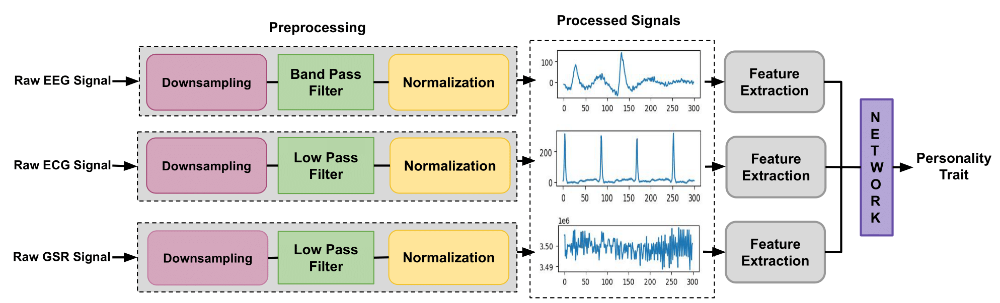
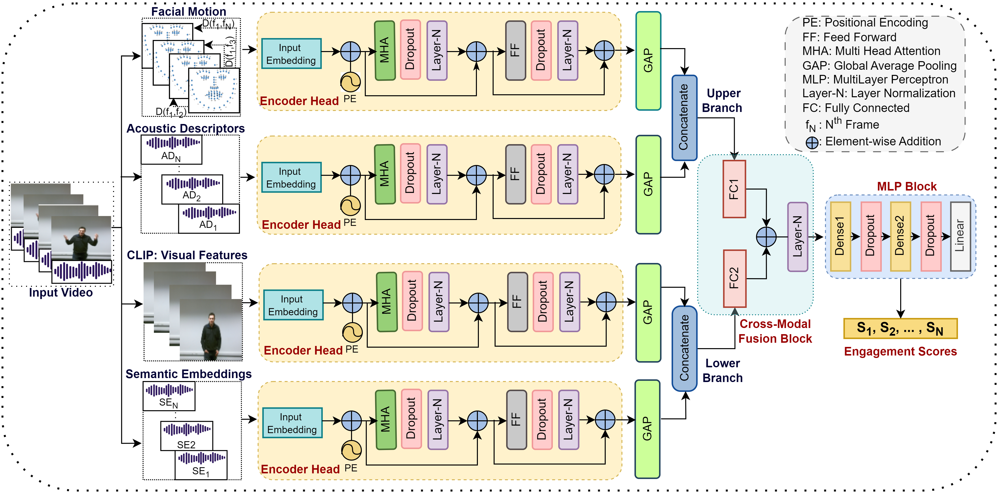
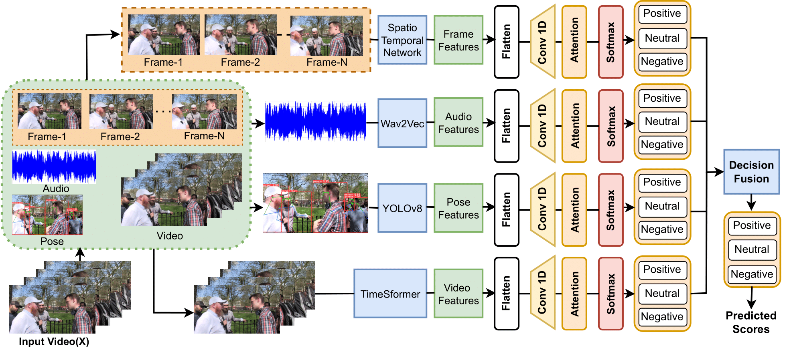
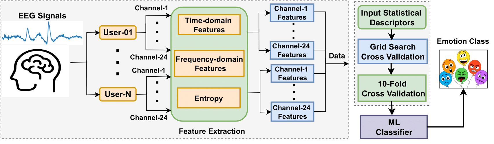
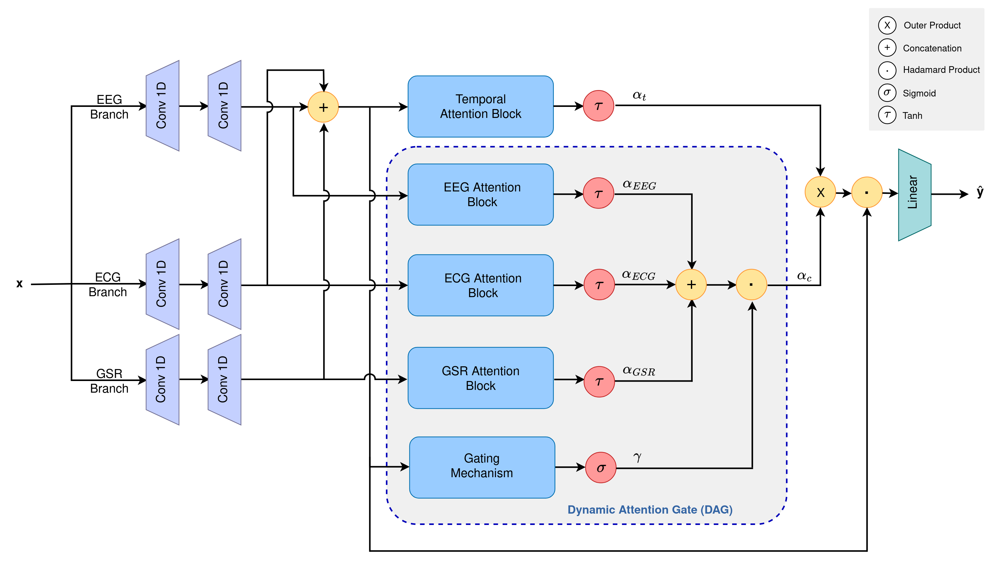
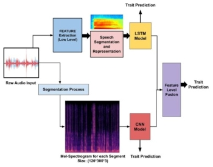
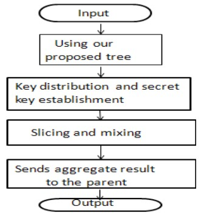

Surbhi Madan
Mail Id: surbhi.19csz0011@iitrpr.ac.in
I recently completed my Ph.D. at the Machine Vision Lab, Indian Institute of Technology Roorkee, India, under the supervision of Prof. Balasubramanian Raman. Before joining Ph.D., I have completed my master’s degree from Motilal Nehru National Institute of Technology, Allahabad. My research focused on Affective Computing, Multimodal human behavior analysis leveraging audio, text, visual, and physiological signal modalities. Additionally, I gained industry experience at Samsung Research Institute Bangalore (SRI-B), where I worked on Vision-Language Models (VLMs).
🔥 News
- Oct 2025: Became a reviewer of RS4SD workshop co-located with the Conference on Information and Knowledge Management (CIKM) 2025.
- Aug 2025: Completed Six months Research Internship at SAMSUNG Research Institute Bangalore (SRI-B), India.
- Aug 2025: Became a reviewer of 1M-Deepfakes Detection Challenge of the 33rd ACM International Conference on Multimedia (MM 2025).
- July 2025: Defended Ph.D. Dissertation successfully on 16 July 2025.
- June 2025: Became a reviewer of Dataset Track of the 33rd ACM International Conference on Multimedia (MM 2025).
- June 2025: Became a reviewer of International Conference on Next-Generation Networks amd Deployable Artificial Intelligence (NGNDAI-2025).
- May 2025: Submitted Ph.D. Thesis entitled 'From Signals to Visuals: Multimodal Affect and Behavior Analysis' on 24 May 2025.
- Feb 2025: Selected for Six months Research Internship at SAMSUNG Research Institute Bangalore (SRI-B), India.
- Dec 2024: Received travel Grant to attend The Fifth Indian Symposium on Machine Learning (IndoML) hosted by the BITS Pilani Goa Campus from December 21-23, 2024.
- Dec 2024: Became a reviewer of the IEEE 6th International Conference on Computational Intelligence and Networks, CINE 2024.
- Nov 2024: Became a reviewer of the IEEE Signal Processing Letters journal.
- Aug 2024: A paper titled 'Towards Engagement Prediction: A Cross-Modality Dual-Pipeline Approach using Visual and Audio Features' got accepted at The 32nd ACM International Conference on Multimedia (MM'24) 28 Oct-01 Nov 2024, Melbourne, Australia.
- Aug 2024: A paper titled 'Fusing Multimodal Streams for Improved Group Emotion Recognition in Videos' got accepted at the 27th International Conference on Pattern Recognition (ICPR 2024), Dec 01-05, 2024, Kolkata, INDIA.
- June 2024: Finalist, Qualcomm Innovation Fellowship 2024 for an innovative research proposal.
- June 2024: A paper titled 'All Signals Point to Personality: A Dual-Pipeline LSTM-Attention and Symbolic Dynamics Framework for Predicting Personality Traits from Bioelectrical Signals' got accepted in the Elsevier Biomedical Signal Processing and Control Journal.
- June 2024: Became a reviewer of the 9th International Conference on Computer Vision and Image Processing (CVIP 2024).
- April 2024: A paper titled 'Neuro-Emotional Mapping of Human Emotions via EEG Signals' got accepted at the 18th IEEE International Conference on Automatic Face and Gesture Recognition 27-31 May 2024 SDKM, ITU Campus, Istanbul, Turkey.
- Mar 2024: I spearheaded the "Syntax" team in the "Brain Responses to Emotional Avatars Challenge" during the 18th IEEE International Conference on Automatic Face and Gesture Recognition (FG 2024), and secured the 2nd position.
- Mar 2024: A paper titled 'Integrating Physiological Signals with Dynamical Attention Networks for Personality Trait Analysis' got accepted at the 33rd International Joint Conference on Neural Networks (IJCNN 2024) Pacifico Yokohama, Yokohama, Japan.
- Feb 2024: Became a reviewer of the 33rd International Joint Conference on Neural Network (IJCNN) Conference 2024.
- Jan 2024: Completed six months of work-studentship program at Deloitte US – India Offices.
- Dec 2023: Played a role as a volunteer at the 14th The Indian Conference on Computer Vision, Graphics and Image Processing (ICVGIP) conference 2023 from 15 - 17 December at IIT Ropar, India.
- July 2023: Selected for a Six-months work-studentship program at Deloitte, India.
- Dec 2022: A paper titled 'Speech-based Automatic Prediction of Interview Traits' got accepted at The 7th International Conference on Computer Vision and Image Processing (CVIP 2022), VNIT Nagpur, India.
- Dec 2021: Started pursuing Ph.D. at Machine Vision and Machine Intelligence Lab, IIT Roorkee advised by Prof. Balasubramanian Raman.
Education
Indian Institute of Technology, Roorkee, Uttarakhand, India
CGPA: 8.58
Supervisor: Prof. R. Balasubramanian
Motilal Nehru National Institute of Technology, Allahabad, Prayagraj, India
CGPA: 8.25
Supervisor: Prof. Rajesh Tripathi
Uttar Pradesh Technical University Lucknow, Uttar Pradesh, India
Work Experience
Research Intern
Work-studentship
Assistant Professor under TEQIP-III (NPIU-MHRD)
Research Interests
- Affective Computing and Cognitive Science
- Machine Learning, Deep Learning, and Computer Vision
- Multimodal Information Analysis
- Human Computer Interaction (HCI)
- Vision Language Models (VLMs)
Publications
📝 Journal
| 1. |  |
Deepak Kumar, Pradeep Singh and Balasubramanian Raman, "All Signals Point to Personality: A Dual-Pipeline LSTM-Attention and Symbolic Dynamics Framework for Predicting Personality Traits from Bioelectrical Signals" Elsevier Biomedical Signal Processing and Control(BSPC) Journal. [SCI, Q1, IF=5.1]
|
📝 Conferences
| 1. |  |
Deepak Kumar, Surbhi Madan, Pradeep Singh, Abhinav Dhall, and Balasubramanian Raman, "Towards Engagement Prediction: A Cross-Modality Dual-Pipeline Approach using Visual and Audio Features", 32nd ACM International Conference on Multimedia (MM'24) 28 Oct-01 Nov 2024, Melbourne, Australia.
[CORE A* | ERA A]
|
|
| 2. |  |
Deepak Kumar, Piyush Dhamdhere and Balasubramanian Raman, "Fusing Multimodal Streams for Improved Group Emotion Recognition in Videos", 27th International Conference on Pattern Recognition (ICPR 2024), December 01-05, 2024, Kolkata, INDIA.
[CORE B | Qualis A1 Accepted]
|
|
| 3. |  |
Deepak Kumar, Pradeep Singh, Ashutosh Kumar, Sutirtha Ghosh and Balasubramanian Raman. "Neuro-Emotional Mapping of Human Emotions via EEG Signals" 18th IEEE International Conference on Automatic Face and Gesture Recognition
27-31 May 2024 SDKM, ITU Campus, Istanbul, Turkey. [CORE B | Qualis A1]
|
|
| 4. |  |
Deepak Kumar, Pradeep Singh, Richa, Kishore Babu Nampalle and Balasubramanian Raman. "Integrating Physiological Signals with Dynamical Attention Networks for Personality Trait Analysis" International Joint Conference on Neural Network (IJCNN 2024). [CORE B | Qualis A2]
|
|
| 5. |  |
Deepak Kumar and Balasubramanian Raman. "Speech-based Automatic Prediction of Interview Traits." 7th IAPR International Conference on Computer Vision & Image Processing (CVIP 2022). [IAPR Endorsed ]
|
|
| 6. |  |
Surbhi Madan, Deepak Kumar and Anamika Agnihotri. "Privacy-Preserving Data Aggregation in Wireless Sensor." 2018 International Conference on System Modeling & Advancement in Research Trends (SMART 2018).
|
Achievements
- GATE qualified in 2013, 2014, 2015.
- UGC-NET qualified in Dec 2015, November 2017, July 2018.
Professional Membership
- Student member of IEEE (Institute of Electrical and Electronics Engineers)
- Professional member of ACM (Association for Computing Machinery)
- Associate member of IEI ( The Institution of Engineers (India) )
Contact
Room No: S-208, South Wing, ECE Building
Machine Vision Lab
Computer Science and Engineering Department, IIT Roorkee, Uttarakhand, India
Mail ID: d_kumar@cs.iitr.ac.in